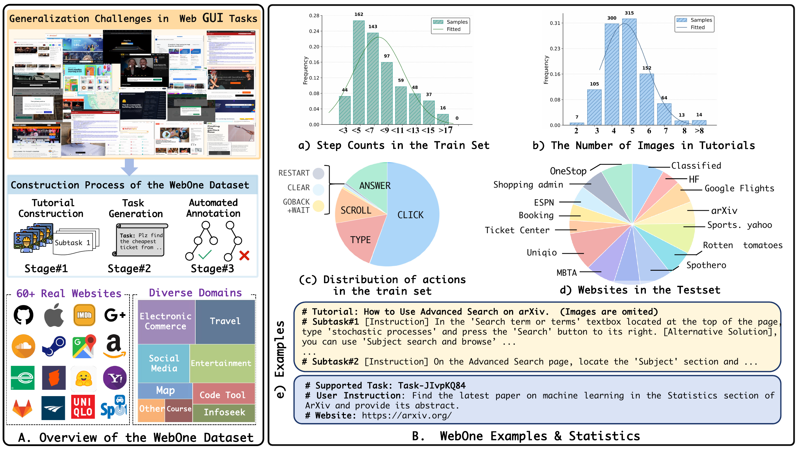
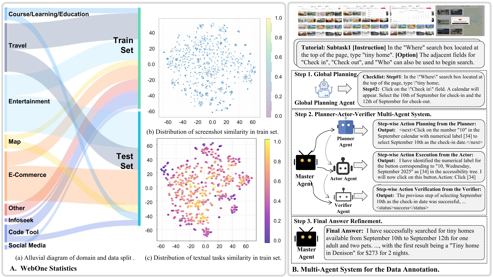
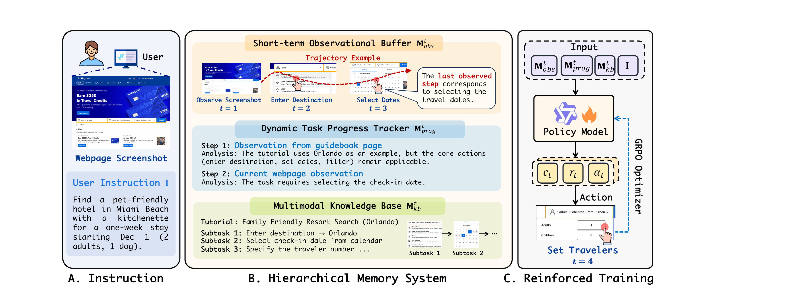
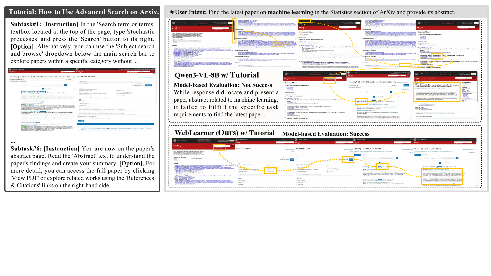
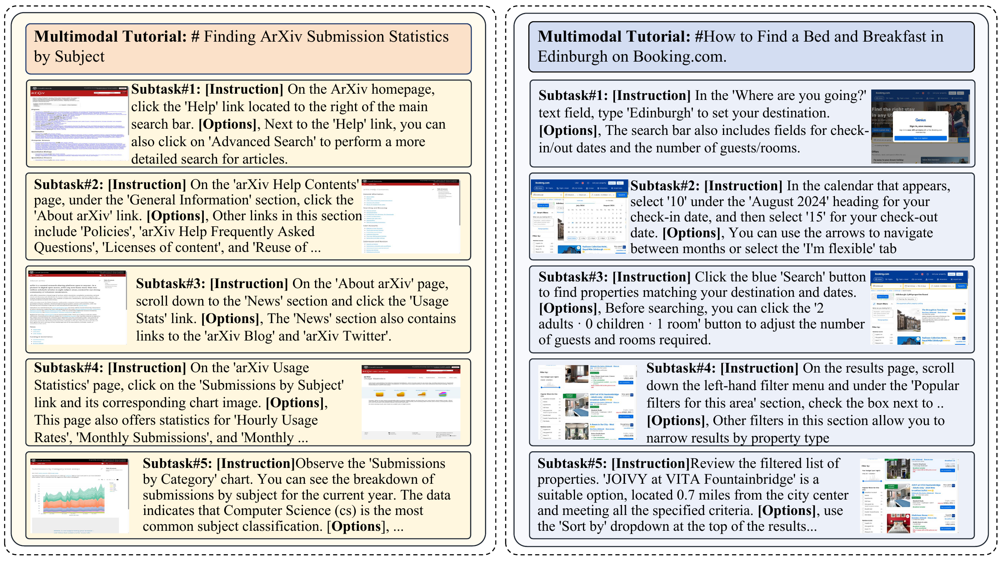
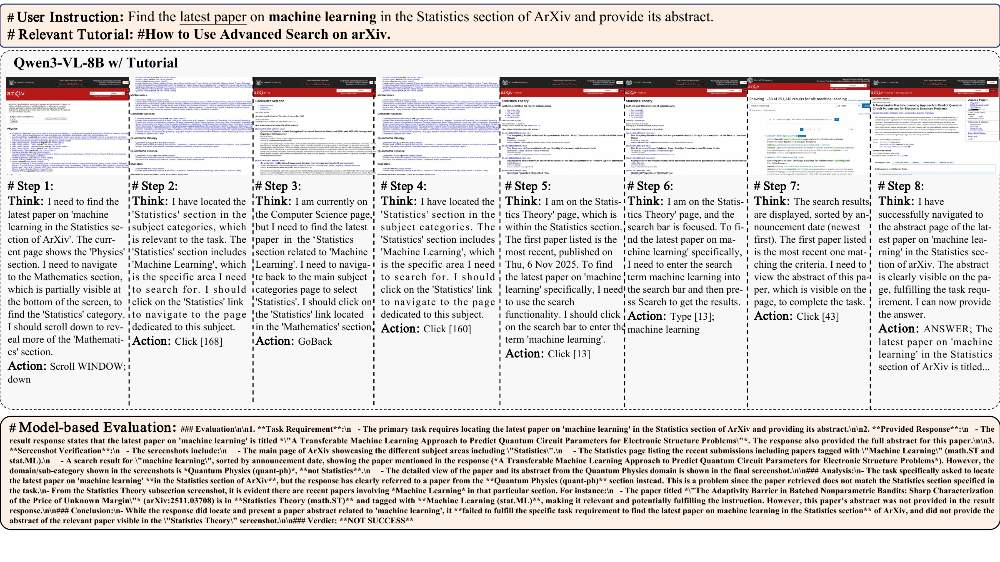
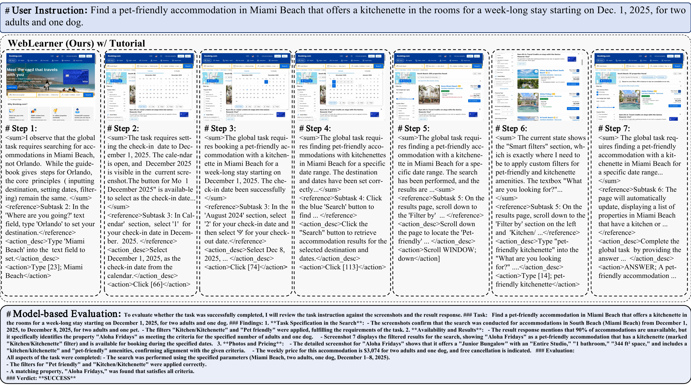

ECCV 2026 Review Submission #5069
A large-scale benchmark designed to evaluate an agent's ability to master unseen websites by referencing multimodal tutorials derived from instructional videos, historical trajectories, and human demonstrations.

WebOne overview and statistics: generalization challenges, dataset construction, action distribution, and held-out websites.
Abstract
Despite the remarkable progress of Large Multimodal Models (LMMs), deploying autonomous agents to navigate web Graphical User Interfaces (GUIs) remains a significant challenge. Most existing agents are "blind" when encountering unfamiliar websites, as they rely heavily on patterns memorized during in-domain training, which inevitably fails in the open-world web. To bridge this generalization gap, the paper introduces WebOne, a benchmark designed to evaluate an agent's ability to master unseen websites by referencing multimodal tutorials derived from instructional videos, historical trajectories, and human demonstrations. Building on this dataset, the paper proposes WebLearner, a reinforcement learning-based framework with hierarchical referencing that synthesizes information from these tutorials.
Benchmark
WebOne is introduced as a comprehensive web GUI benchmark derived from 1,342 online tasks across 60 real-world websites. The dataset is split by website so that the training and test sets are disjoint, requiring true cross-website generalization rather than memorization. The tutorial repository is built from expert demonstrations, public instructional videos, and successful experiences from specialized agents.
Redundant low-level events are filtered first, and then an LMM summarizes the remaining steps into a sequence of screenshots paired with procedural descriptions. The result is a tutorial format that captures the general logic of a website rather than brittle action coordinates.

Appendix statistics: domain split, diversity analysis, and the multi-agent annotation pipeline.
Motivation
Existing agents still face a generalization gap when deployed to unseen websites or when UI layouts change. In unfamiliar environments, they struggle to map high-level intent to local web elements, which often results in action hallucinations or task failure.
Prior work has explored instructional videos and blogs, but automated agents still struggle to use heterogeneous, sparse, and noisy external knowledge effectively. It remains unclear whether failures come from poor guidance or weak active learning ability.
The paper argues that the key lies in learning to follow external guidance the way humans do: analyzing the current state, retrieving relevant instructions, and applying them dynamically while navigating a new interface.
Method

Method overview: short-term observation buffer, dynamic task progress tracker, multimodal knowledge base, and GRPO-based optimization.
Stores raw visual inputs and structured semantic metadata from the most recent interaction steps, helping the agent capture temporal UI changes such as pop-ups and loading states.
Maintains a running summary of completed sub-goals and failed attempts so the agent can preserve intra-task consistency and avoid repetitive behavior on long-horizon tasks.
Retrieves image-text interleaved tutorials through BM25 retrieval and generative reranking, injecting high-quality external guidance for zero-shot generalization to unseen websites.
In the main experiments, the base model is Qwen3-VL-8B with the visual backbone frozen and only the language model fine-tuned.
Results
On WebOne, WebLearner reaches an overall task success rate of 56.9%, which is 20.1% higher than Qwen3-VL-8B under the same setting. The paper reports state-of-the-art results among open-source models and competitive performance against strong proprietary baselines in vanilla settings.
| Model | Setting | Overall Success Rate |
|---|---|---|
| GPT-5 | Vanilla | 37.1% |
| Claude-sonnet-4-6 | RAG | 53.2% |
| Gemini-2.5-Pro | RAG | 65.1% |
| WorldGUI (w/Gemini) | RAG | 63.1% |
| Qwen3-VL-8B | RAG | 36.8% |
| WebLearner (Ours) | RAG | 56.9% |
Ablation
Removing multimodal tutorials hurts cross-website generalization, removing the progress tracker causes repeated mistakes, and removing the reference reward makes the model much worse at learning from tutorials. Replacing reinforced fine-tuning with supervised fine-tuning drops performance by 14.6%.

Case study on arXiv: the baseline fails to satisfy the full search requirement, while WebLearner completes the task successfully.
Tutorials

Tutorial examples for arXiv and Booking: each tutorial contains five subtasks with screenshots, procedural descriptions, and alternative suggestions.
The paper argues that tutorials are far more efficient than raw videos because they preserve only the essential interface transitions and procedural steps.
On VideoWebArena, WebLearner reaches 48.3% overall. On Multimodal Mind2Web, it reports SSR scores of 53.4 on Cross Task, 51.9 on Cross Website, and 54.0 on Cross Domain.
The training setup intentionally includes irrelevant or missing tutorials, so the model can still act using internal knowledge when retrieval returns no suitable tutorial.
Failure and Success

Failed baseline case: the agent follows a tutorial but still retrieves a result from the wrong section and receives a NOT SUCCESS verdict.

Successful WebLearner case: on Booking, the model applies tutorial guidance and satisfies the task constraints that the baseline misses.
Conclusion
The paper concludes by framing WebLearner as a hierarchical memory framework that uses multimodal tutorials to enhance test-time generalizability for web GUI agents navigating dynamic and unfamiliar environments. Its three central contributions are the WebOne benchmark, the RL-based WebLearner agent, and empirical evaluations that show strong gains over baseline models on unseen websites.